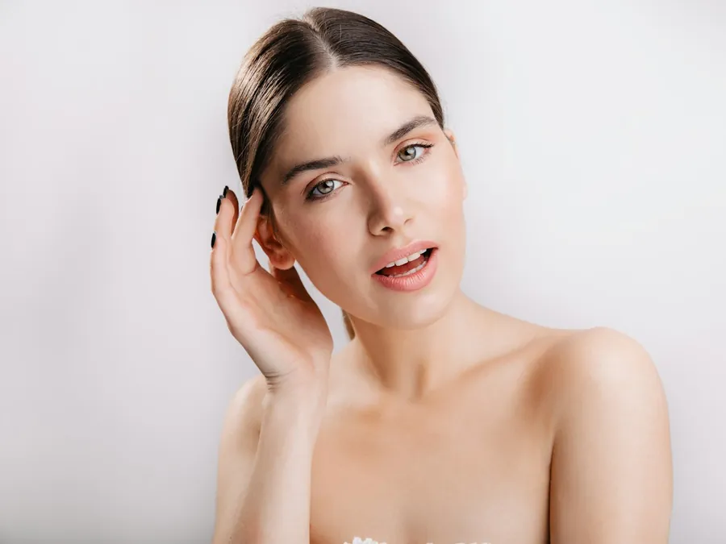

Antes de agendar
Rinomodelación o rinoplastia:
lo que cada una puede cambiar
Una suma volumen con ácido hialurónico y se borra sola. La otra cambia la estructura de la nariz para siempre. No resuelven el mismo problema.
Llegas con una foto guardada en el celular y una duda que todavía no resuelves: ¿te alcanza con un relleno o necesitas pasar por quirófano? La rinomodelación con ácido hialurónico y la rinoplastia cambian la nariz, pero no corrigen lo mismo ni se deciden de la misma manera en Medellín.
Qué puede cambiar la rinomodelación y qué puede cambiar la rinoplastia
La rinomodelación trabaja con ácido hialurónico inyectado en la nariz. Según la Sociedad Estadounidense de Cirujanos Plásticos (ASPS), solo suma volumen: puede disimular una giba pequeña o mejorar el contorno de la punta, rellenando a los lados. No reduce la nariz, no le quita ninguna parte y no mejora la respiración.
La rinoplastia es una cirugía que sí modifica la estructura: puede retirar hueso o cartílago para reducir una nariz grande, o sumar injertos (casi siempre del propio tabique) para dar proyección. Cuando el problema para respirar viene de un tabique desviado, la ASPS señala que puede corregirse ajustando esa misma estructura, a veces junto con una septoplastia.
A quién le sirve la rinomodelación
Si lo que te molesta es una giba pequeña o una punta que quieres ver más definida, y no buscas un cambio de estructura, la rinomodelación puede ser suficiente. Se aplica con anestesia tópica, no pide incapacidad y el ácido hialurónico se puede disolver con una enzima si el resultado no queda como esperabas.
Tiene un límite que vale la pena entender antes de agendar: es temporal. Mientras tu cuerpo absorbe el producto, el efecto se va perdiendo de forma gradual, y repetir la sesión es parte normal de mantenerlo, no una señal de que algo salió mal.
A quién le sirve la rinoplastia
Si la meta es reducir el tamaño de la nariz, corregir una desviación que te dificulta respirar o cambiar una estructura que un relleno no puede tocar (un dorso muy prominente, una punta caída o bulbosa, fosas nasales grandes), ahí entra la rinoplastia. La ASPS describe como buen candidato a quien ya terminó su crecimiento facial, está físicamente sano, no fuma y tiene metas realistas; no fija una edad mínima.
Es una cirugía, así que pide la misma preparación de fondo que cualquier cirugía plástica (exámenes, ajustar medicamentos, dejar de fumar, evitar aspirina y antiinflamatorios) y un acompañante que te lleve, te traiga y se quede contigo al menos la primera noche. La inflamación baja en semanas, pero puede ir y venir durante el primer año antes de que el contorno quede definido del todo.
La pregunta que casi nadie hace antes de decidir: ¿ya te operaste la nariz?
Si ya tuviste una rinoplastia y ahora piensas en un retoque con ácido hialurónico, cuéntaselo a tu especialista en la valoración. Según la ASPS, después de una cirugía la irrigación de la piel de la nariz cambia, y aplicar relleno en esa zona tiene más riesgo de afectar la circulación. No es un "no" automático, pero es un dato que cambia cómo se evalúa tu caso, y solo se revisa con un examen presencial.
Lo que las dos comparten: una zona que no perdona el descuido
Ninguna de las dos está libre de riesgo. La rinomodelación se aplica cerca de vasos sanguíneos donde una inyección mal ubicada puede comprometer la circulación de la piel; por eso la ASPS la describe como una zona de riesgo más alto que otras partes de la cara. La rinoplastia tiene los riesgos propios de cualquier cirugía con anestesia: infección, cambios de sensibilidad, cicatrización, y en casos raros, una perforación del tabique que puede necesitar otra cirugía para repararla.
Por esto ninguna de las dos se decide mirando una foto de referencia o un video. Lo que corresponde a tu nariz, con tu piel y tu anatomía, lo confirma tu especialista en una valoración presencial en Medellín.
Cómo se decide en la práctica
- Buscas un cambio pequeño y reversible. La rinomodelación encaja: menos tiempo, sin incapacidad, efecto temporal.
- Buscas reducir, corregir una desviación o un cambio permanente. Ahí la rinoplastia es la que puede llegar a ese resultado.
- No estás segura de cuál aplica a tu caso. Es lo más común. La diferencia entre "giba pequeña" y "giba grande", o entre una punta caída que mejora con relleno y una que necesita cirugía, no siempre se ve a simple vista; se confirma examinando la nariz.
Si tu interés es sobre todo mejorar la respiración, esa conversación empieza directamente por la rinoplastia, porque ningún relleno trabaja la función nasal. Y si lo que quieres es un cambio leve en la punta o disimular una giba pequeña, puedes empezar por la rinomodelación y revisar con tu médica si ese cambio te deja satisfecha o si más adelante consideras la cirugía.
Procedimientos de esta guía
Esta guía es informativa y no reemplaza una valoración médica. La indicación, los tiempos de recuperación y la fecha de regreso los define tu especialista en persona. Todo procedimiento tiene riesgos y los resultados varían de una persona a otra.
Preguntas frecuentes
Preguntas frecuentes
¿La rinomodelación puede reemplazar a la rinoplastia?
No. Según la ASPS, el ácido hialurónico solo suma volumen: no reduce la nariz, no le quita ninguna parte y no mejora la respiración. Si tu meta es achicar la nariz, corregir una desviación o respirar mejor, eso se evalúa como rinoplastia.
¿Cuánto dura cada una?
La rinomodelación es temporal: el cuerpo absorbe el ácido hialurónico en 6 a 18 meses, según la zona. La rinoplastia es definitiva: hay cambios graduales con la edad, como en el resto de la cara, pero no se repite cada año.
¿Cuál tiene menos recuperación?
La rinomodelación: inflamación leve de 2 a 5 días y sin incapacidad. La rinoplastia pide más tiempo: entre 10 y 15 días de incapacidad aproximada, con férula la primera semana.
¿Me puedo hacer rinomodelación si ya tuve una rinoplastia?
Cuéntalo en la valoración. Según la ASPS, después de una rinoplastia cambia la irrigación de la piel de la nariz, y el relleno en esa zona tiene más riesgo de afectar la circulación.
¿Sirve la rinomodelación para una giba grande o para respirar mejor?
No. Puede disimular una giba pequeña rellenando a los lados, pero no la quita ni corrige un tabique desviado. Para esos dos casos, la ASPS señala la rinoplastia, que sí puede modificar la estructura.
¿Cuál tiene menos riesgo?
Ninguna está libre de riesgo. La rinomodelación se aplica en una zona donde una inyección mal ubicada puede afectar la circulación de la piel; la rinoplastia tiene los riesgos propios de una cirugía con anestesia. Tu especialista revisa cuál aplica a tu caso en la valoración presencial.
Blog
Sigue leyendo.
 Bioestimuladores de colágeno: para quién son y para quién noHace que tu propia piel vuelva a producir colágeno, en lugar de rellenarla desde afuera.Leer
Bioestimuladores de colágeno: para quién son y para quién noHace que tu propia piel vuelva a producir colágeno, en lugar de rellenarla desde afuera.Leer
Hilos tensores: qué esperar y cuánto dura el efectoLos primeros días traen inflamación y algo de molestia. El efecto se instala rápido y se va apagando con los meses.Leer Hilos tensores o lifting facial: la diferencia es cuánta flacidez tienesUno es una sesión en consulta. El otro es una cirugía en quirófano. No compiten entre sí: responden a grados distintos de flacidez.Leernoon Clinic
Tu valoración de rinomodelación
Todo empieza con una conversación con nuestros especialistas.
Te respondemos en minutos por WhatsApp, en horario de atención. Resolvemos tus dudas y agendamos tu valoración presencial; por WhatsApp no diagnosticamos. Por qué noon